Gradient Computation & Automatic Differentiation
Let us first import some libraries:
import numpy as np
%matplotlib inline
import matplotlib.pyplot as plt
from IPython.core.debugger import set_trace
import warnings
warnings.filterwarnings('ignore')
Recall last time we introduced multilayer perceptrons, a two layer one is shown below. And like usual, our goal is to minimize some loss function. However, in this case, this will be a non covex optimization problem, so there may be many local minima, local maxima, and even saddle points (the graident is zero).
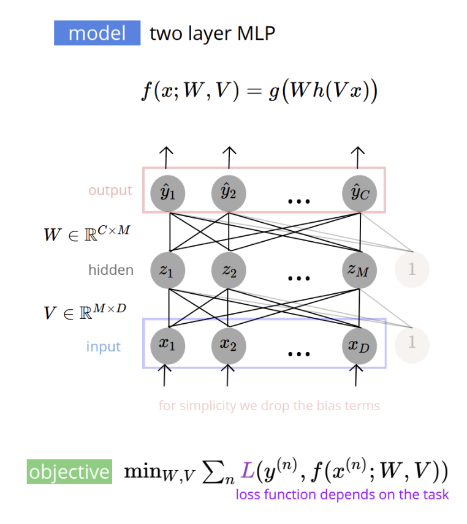
However, this non convexity turns out not be a problem since maxima and saddle points are unstable, that is, unless you land directly on the critical point, you will always tend downward in the local region, and continue finding a minimum. And of course, this is not the case when you land near a minimum. As an aside, the number of weights or parameters in the above graph would be the number of edges, which would be equal to $(M\times D)+(C\times M)$. To optimize, we first need to review some basic calculus:
- $f:\mathbb{R}\mapsto \mathbb{R}$, we take the derivative of the function $\frac{d}{dw}f(x)\in \mathbb{R}$.
- $f:\mathbb{R}^D\mapsto \mathbb{R}$, we take the gradient, which is a vector of all partial derivative: $$\nabla_w f(w)=\begin{bmatrix} \frac{\partial}{\partial w_1}f(w) & \cdots & \frac{\partial}{\partial w_D}f(w) \end{bmatrix}^{\top}\in \mathbb{R}^D$$
- $f:\mathbb{R}^D\mapsto \mathbb{R}^M$, we take a vector of multivariable functions and output a matrix of all partial derivatives,
also known as the Jacobian matrix, where each $i^{\text{th}}$ row is the gradient of the function in the
$i^{\text{th}}$ position of the input vector.
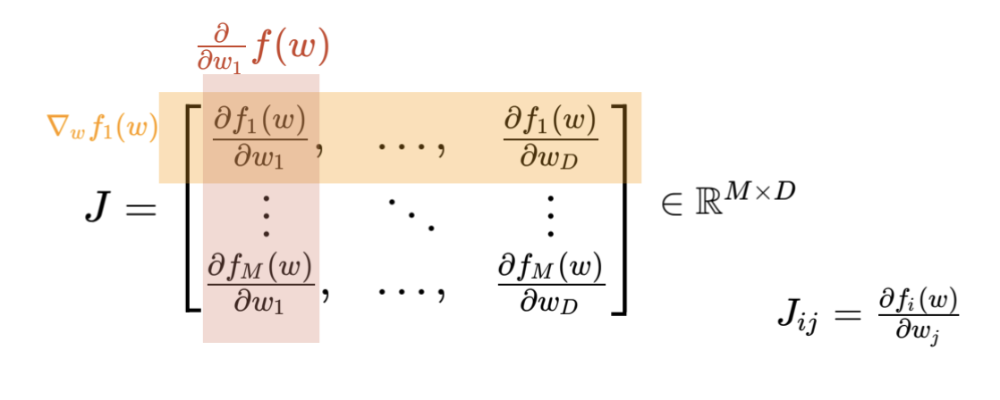
Note that the input can also be a matrix, but we must flatten or reshape it to a vector form.
Also recall the chain rule, which says for functions $f:x\mapsto z$ and $h:z\mapsto y$, where $x,y,z\in \mathbb{R}$, we have:
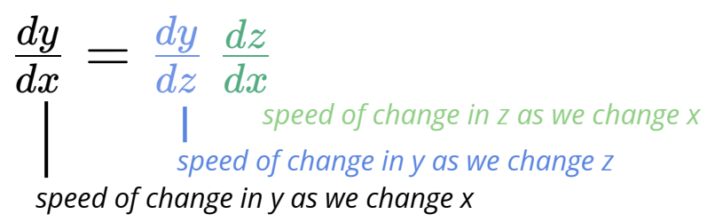
Or more generally for multivariable functions, i.e for $x\in \mathbb{R}^D$, $z\in \mathbb{R}^M$, and $y\in \mathbb{R}^C$, we have:
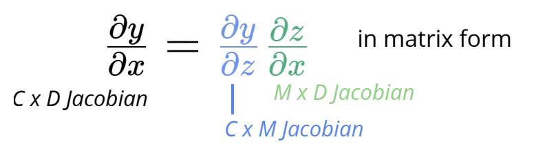
In context of a neural network, inspect the illustration below. If we are interested in knowing how $y_2$ changes as we vary $x_2$, we sum up all the contributions of the paths that lead from $x_2$ to $y_2$, where we multiply the derivatives the derivatives of each connected variable.
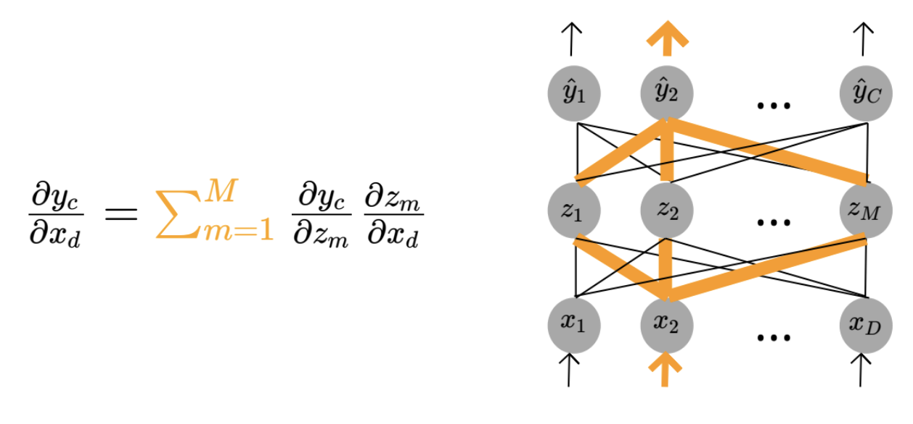
Let us try this out on a two layer neural network. We have our model below, and our cost function, which we want to minimize with respect to our parameters, and thus will need to compute the gradient of the parameters, $\frac{\partial}{\partial W}J$ and $\frac{\partial}{\partial V}J$, so we can use gradient descent.
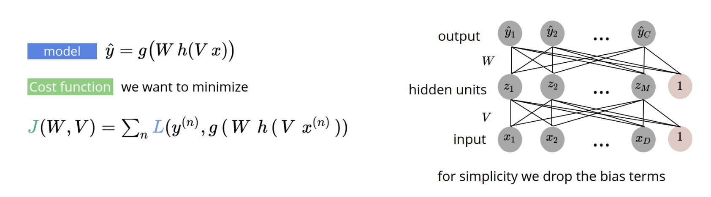
For simplicity, let us write this for only one instance of $n$, i.e let us find:
$$\frac{\partial}{\partial W}J=\sum_{n=1}^N \frac{\partial}{\partial W}L\left(y^{(n)},\hat{y}^{(n)}\right)\;\;\;\;\;\;\;\;\text{and}\;\;\;\;\;\;\;\;\frac{\partial}{\partial V}J=\sum_{n=1}^N \frac{\partial}{\partial V}L\left(y^{(n)},\hat{y}^{(n)}\right)$$In practice, we know that a neural network is simply a series of compositions of functions: you have your input function $x_d$, and you perform a linear transformation to get $q_m$, that you then compose with a nonlinear activation function $h$, that you then apply another linear transformation to get $u_c$, which you compose again with a nonlinear function $g$, and finally you compute your loss function that we can compare with the ground truth. So if we want to compute the loss function with respect to $W$ and $V$, we simply use chain rule:
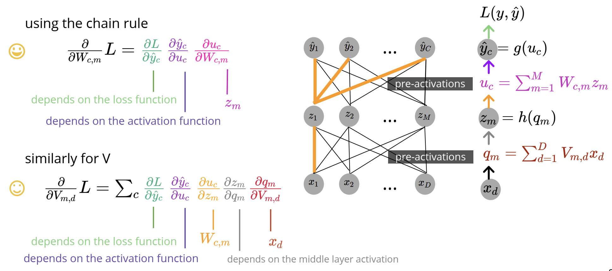
Looking at $\frac{\partial}{\partial W}L$, we can see that both the loss function and activation function will depend on the task at hand. For instance, the result of this derivative for regression is shown below, where we use squared error for the loss function, and the identity mapping for activation function $g$, and so we have:

And if our task is binary classification, we use the cross entropy loss function, and our activation function $g$ will be the sigmoid function. And so we will get:
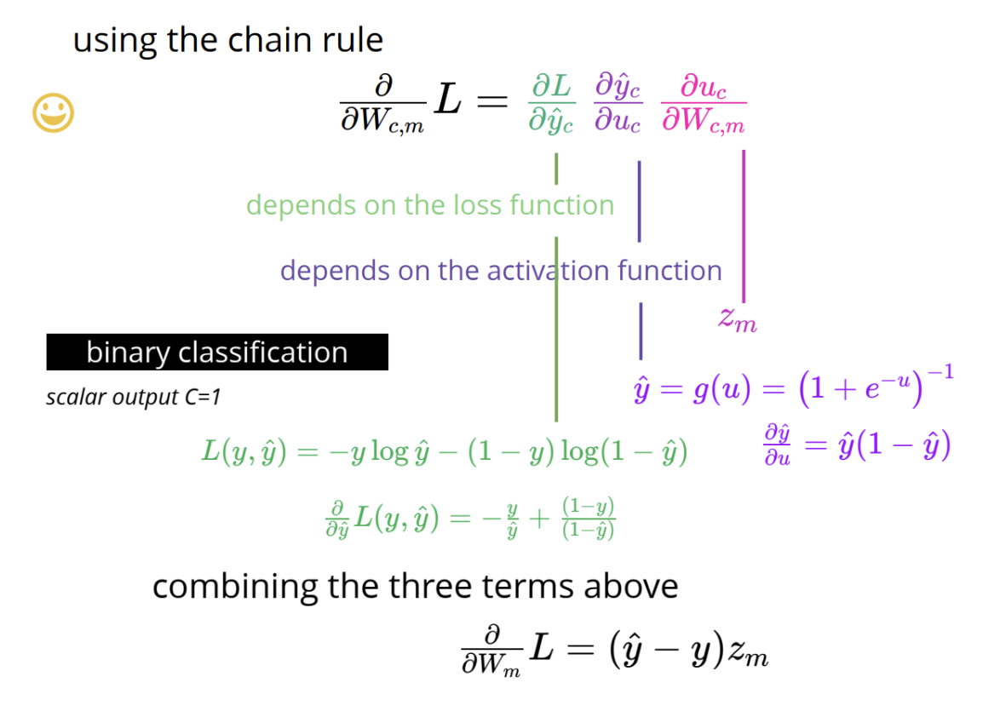
And finally, if our task is multiclass classification, we again use cross entropy as our loss function, and the softmax function as the activation function $g$. And so we get:
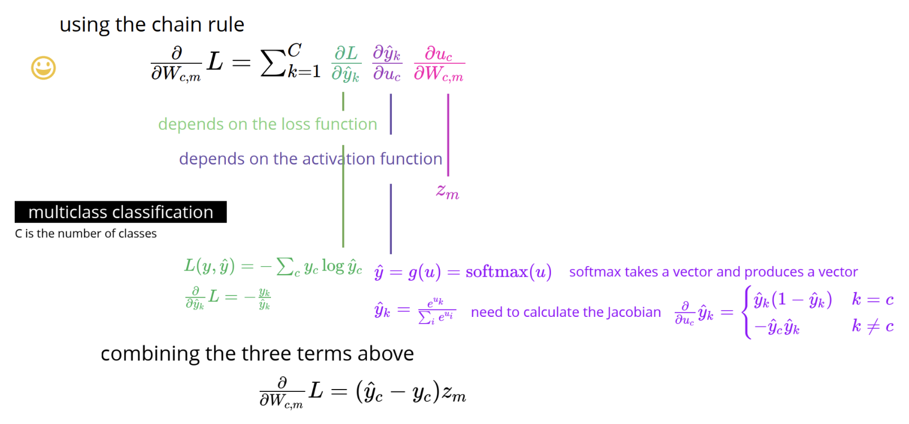
Turing our attention now to $\frac{\partial}{\partial V}L$, we have already discussed the first two derivatives in our product, but now we differentiate based on what we select as the activation function of the hidden layer, with some common and popular options shown below. For the sake of example, we calculate the derivative of our loss function when using the sigmoid function for the hidden activation layer.
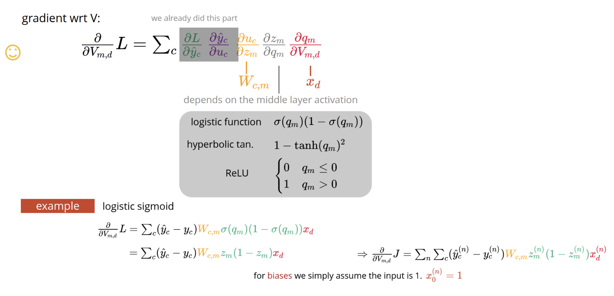
Let us see how this works with a toy example. Our goal here is to implement a two-layer neural network for binary classification, train it using gradient descent and use it to classify the Iris dataset. Our model is
$$ \hat{y} = \sigma \left ( W \sigma \left ( V x \right ) \right) $$Where we have $M$ hidden units and $D$ input features -- that is $w \in \mathbb{R}^{M}$, and $V \in \mathbb{R}^{M \times D}$. For simplicity here we do not include a bias parameter for each layer. Key to our implementation is the gradient calculation.
logistic = lambda z: 1./ (1 + np.exp(-z))
class MLP:
def __init__(self, M = 64):
self.M = M
def fit(self, x, y, optimizer):
N,D = x.shape
def gradient(x, y, params):
v, w = params
z = logistic(np.dot(x, v)) #N x M
yh = logistic(np.dot(z, w))#N
dy = yh - y #N
dw = np.dot(z.T, dy)/N #M
dz = np.outer(dy, w) #N x M
dv = np.dot(x.T, dz * z * (1 - z))/N #D x M
dparams = [dv, dw]
return dparams
w = np.random.randn(self.M) * .01
v = np.random.randn(D,self.M) * .01
params0 = [v,w]
self.params = optimizer.run(gradient, x, y, params0)
return self
def predict(self, x):
v, w = self.params
z = logistic(np.dot(x, v)) #N x M
yh = logistic(np.dot(z, w))#N
return yh
In the implementation above we have used a list data structure to maintain model parameters and their gradients. Below I have modified the GradientDescent class to also work with a list of parameters. One sournce of confusion in the above implementation is the gradient calculation.
Here, we use vector and matrix operations to calculate the derivative for all parameters.
class GradientDescent:
def __init__(self, learning_rate=.001, max_iters=1e4, epsilon=1e-8):
self.learning_rate = learning_rate
self.max_iters = max_iters
self.epsilon = epsilon
def run(self, gradient_fn, x, y, params):
norms = np.array([np.inf])
t = 1
while np.any(norms > self.epsilon) and t < self.max_iters:
grad = gradient_fn(x, y, params)
for p in range(len(params)):
params[p] -= self.learning_rate * grad[p]
t += 1
norms = np.array([np.linalg.norm(g) for g in grad])
return params
Let's apply this to do binary classification with Iris flowers dataset. Below we run gradient descent for a large number of iterations and plot the decision boundary.
from sklearn import datasets
dataset = datasets.load_iris()
x, y = dataset['data'][:,[1,2]], dataset['target']
y = y == 1
model = MLP(M=32)
optimizer = GradientDescent(learning_rate=.1, max_iters=20000)
yh = model.fit(x, y, optimizer).predict(x)
x0v = np.linspace(np.min(x[:,0]), np.max(x[:,0]), 200)
x1v = np.linspace(np.min(x[:,1]), np.max(x[:,1]), 200)
x0,x1 = np.meshgrid(x0v, x1v)
x_all = np.vstack((x0.ravel(),x1.ravel())).T
yh_all = model.predict(x_all) > .5
plt.scatter(x[:,0], x[:,1], c=y, marker='o', alpha=1)
plt.scatter(x_all[:,0], x_all[:,1], c=yh_all, marker='.', alpha=.01)
plt.ylabel('sepal length')
plt.xlabel('sepal width')
plt.title('decision boundary of the MLP')
plt.show()
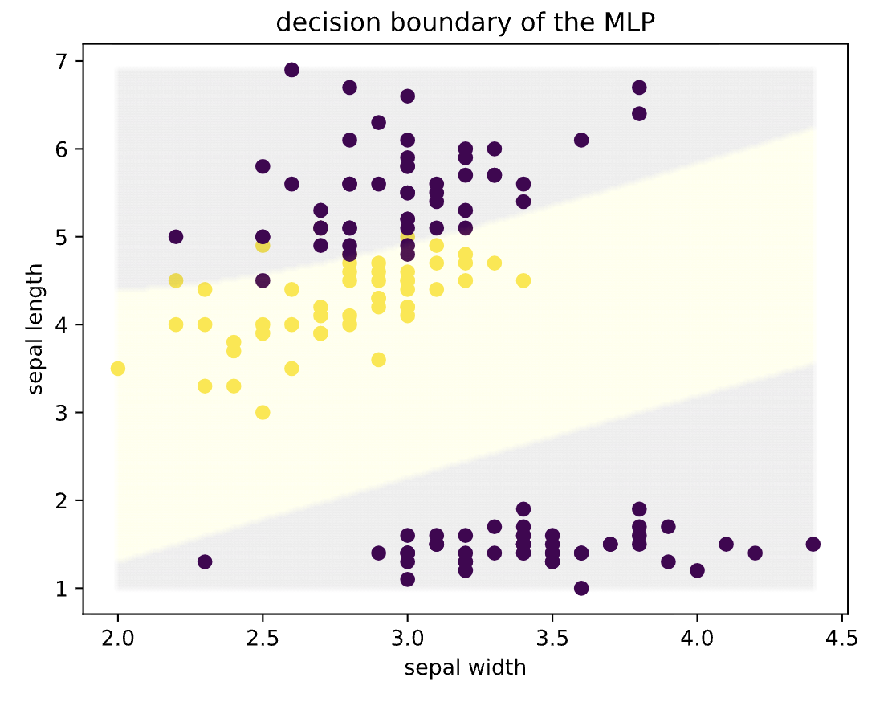
As we can see so far, taking these gradient computations is quite tedious and mechaniacal, so is there a way we can automate it? Well, a first could be to use numerical differentiation, which approximates partial derivatives using finite differences, needing multiple forward passes for each input and output pair. However, this can be quite slow and inaccurate, and so it is not often used in practice. We could also use symbolic differentiation, however with many weights, this becomes quite inefficient, and so it is also not used much in practice.
And so, what we will use instead is automatic/algorithmic differentiation. The basic idea of this is outlined below:
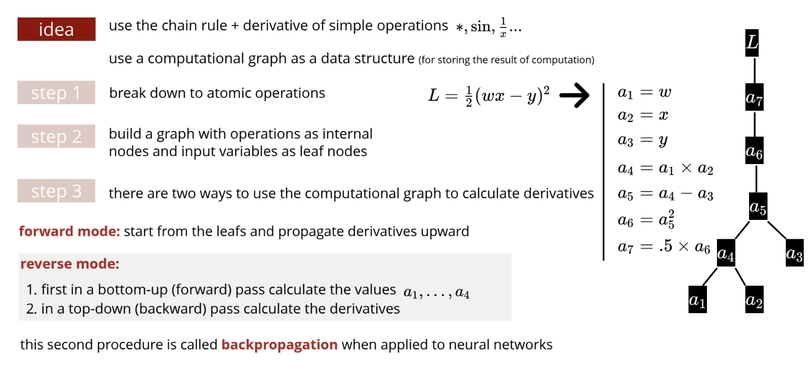
Consider the below example for forward mode automatic differentiation. Note that forward mode is not popularly used in practice, but it serves as a useful primer to investigate reverse mode or backpropagation, which is more widely used. Below we have a function with two outputs, $y_1$ and $y_2$ which are functions themselves of $x$ and weights $w_1$ and $w_0$. And so, in a single forward pass, we find:
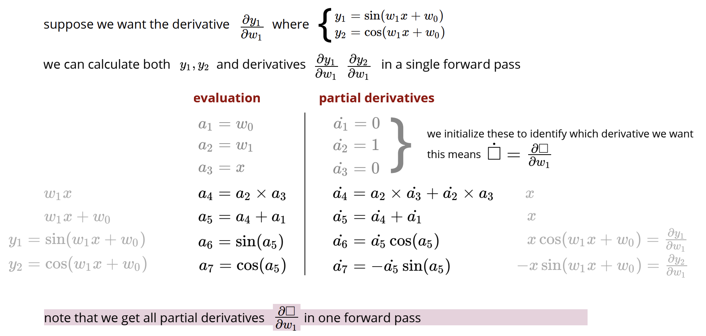
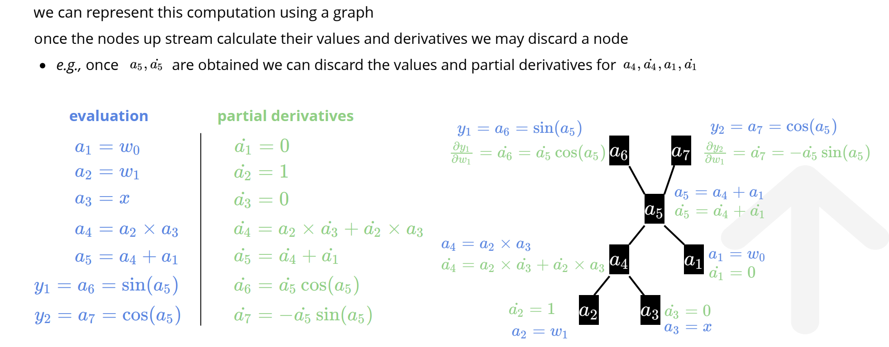
Although this method seems tempting, it is not super efficient overall since for neural networks we would need to compute the derivatives for all variables that we have, which would mean we would have to build one tree like the one above for all variables (the tree for forward mode computes all derivatives for only one variable), and as such, it tends to be quite inefficient for larger networks.
By contrast, reverse mode or backpropagation, we have two passes of the graph: one where we evaluate all of the atomic terms, and the second where we traverse backwards/downwards evaluating all of the partial derivatives. The result of this tree is you get the partial derivatives with respect to all parameters for one output. This seems better suited for neural networks, because we typically have many parameters, but not too many outputs in the final layer. An example of this is shown below:
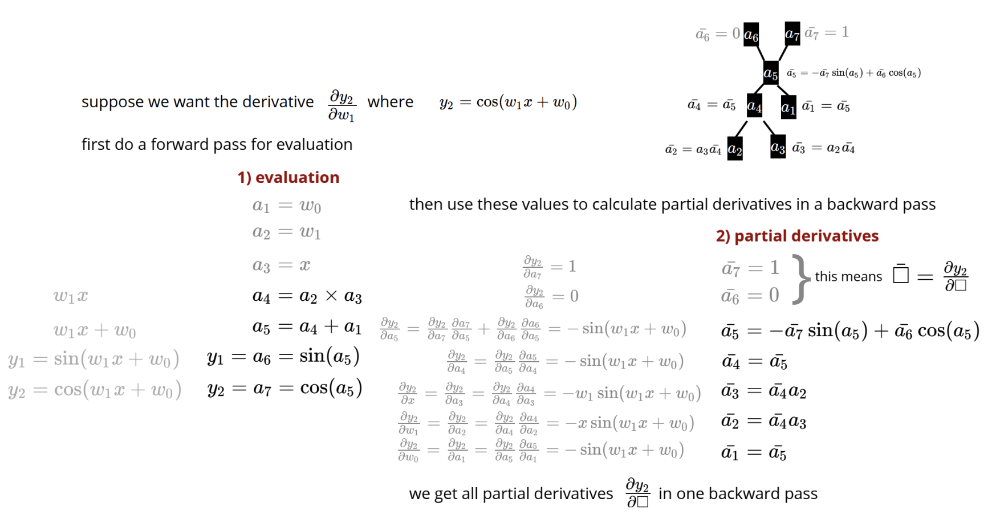
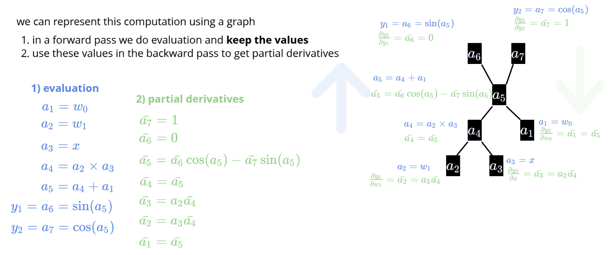
As we notice, forward mode seems more natural and is easier to implement, not to mention it requires less memory, as we only require a single forward pass to calculate: $\frac{\partial y_1}{\partial w},\dots,\frac{\partial y_c}{\partial w}$. However, reverse mode is more efficient in calculating the gradient $\nabla_wy =\begin{bmatrix} \frac{\partial y}{\partial w_1} & \cdots & \frac{\partial y}{\partial w_D} \end{bmatrix}^{\top}$ whichis indeed more efficient if we have a single output (cost) and many variables (weights). For this reason, in training neural networks, reverse mode is used.
Some important tips to improve the optimization process: first is in the initialization of parameters, where typically instead of initializing them to zero, you give random values sampled from a uniform or Gaussian distribution (with small variance). This is essential if you are using $\text{ReLU}$ as your activation function, beceause it will only activate with an input greater than zero.
Moreover, there are other qualities you can implement into your model that allows them to have an easier time to learn. For instance, using $\text{ReLU}$ as an activation function, or using skip-connections, we aids in a faster optimization. Another way is a form of curriculum learning where you gradually increase the complexity of your loss function.